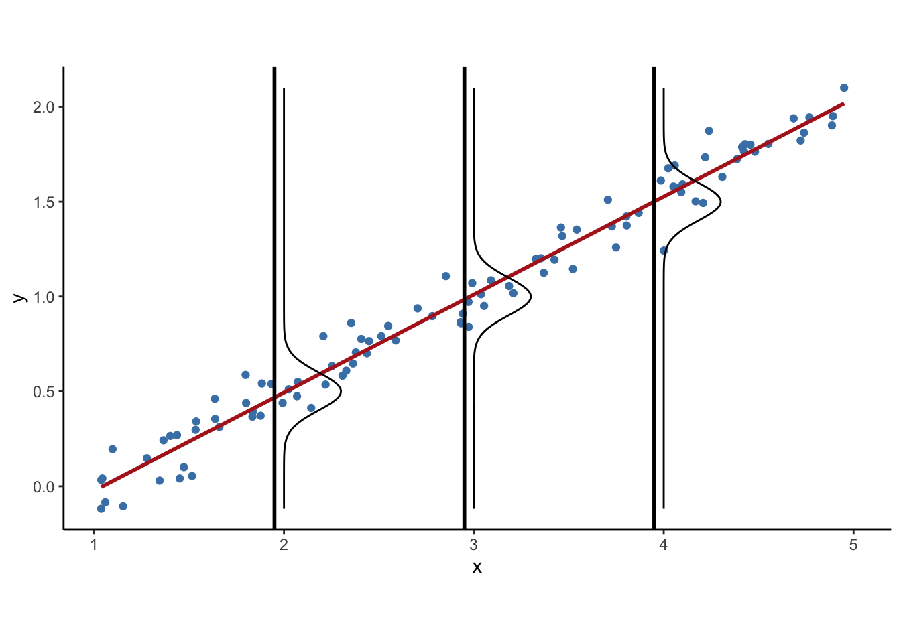

library(ggplot2)
library(ggdist)
library(distributional)
# simulate data
set.seed(1632)
# Y ~ Normal(mu, sigma)
# mu = a1 + a2 * X
dat <- data.frame(x = runif(100, min = 1, max = 5))
dat$y <- rnorm(100, -0.5 + dat$x*1/2, 0.1)
ggplot(dat, aes(x, y)) +
geom_point(colour = "steelblue") +
geom_smooth(method = "lm", se = FALSE, colour = "firebrick") +
stat_slab(data = data.frame(x = c(2, 3, 4)),
aes(x = x, ydist = dist_normal(-0.5+x*1/2, .1)),
inherit.aes = FALSE,
fill = NA, colour = "black",
scale = 0.3, size = 0.5) +
geom_vline(xintercept = c(2, 3, 4)-0.05, size = 1) +
theme_classic() +
coord_fixed()`geom_smooth()` using formula 'y ~ x'